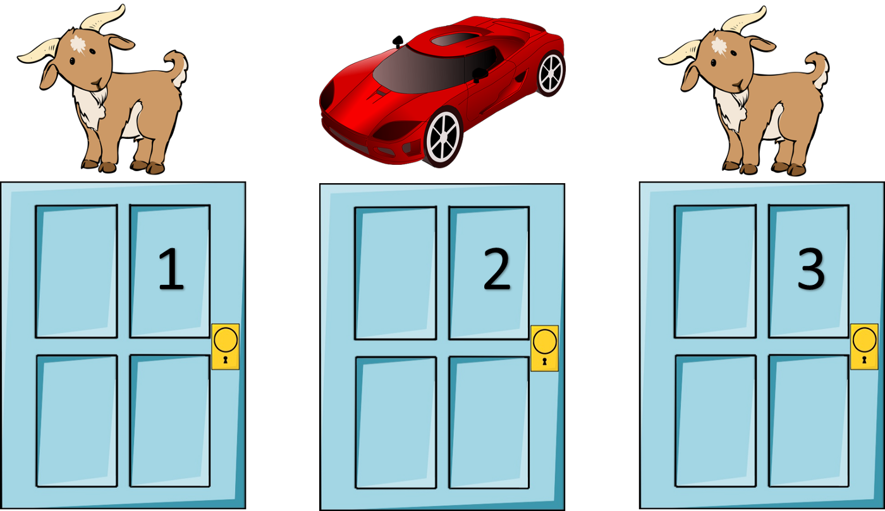

Práctica - Unidad 2
Modelos de Distribuciones Conjugadas
Esta sección contiene ejercicios para trabajar con modelos basados en distribuciones conjugadas. En general, los ejercicios requieren cálculos o derivaciones que se pueden realizar a mano. Sin embargo, se promueve fuertemente el uso de la computadora y el lenguaje R para verificar los resultados, mostrar soluciones alternativas y ejercitar el uso de una herramienta que será muy útil a lo largo de todo el curso y de la vida profesional.
¿Quién domina el posterior?
Para cada una de las situaciones siguientes, se da una distribución a priori Beta para el parámetro \(\pi\) de un ensayo binomial. Para cada escenario, identificar cuál de estos se cumple: el prior tiene mayor influencia en el posterior, los datos tienen más influencia en el posteriori, o la creencia a priori y los datos influyen de manera similar en la creencia a posteriori
- Prior: \(\pi \mid \text{Beta}(1,4)\), observaciones: \(Y=8\) éxitos en \(n=10\) ensayos
- Prior: \(\pi \mid \text{Beta}(20,3)\), observaciones: \(Y=0\) éxitos en \(n=1\) ensayos
- Prior: \(\pi \mid \text{Beta}(4,2)\), observaciones: \(Y=1\) éxitos en \(n=3\) ensayos
- Prior: \(\pi \mid \text{Beta}(3,10)\), observaciones: \(Y=10\) éxitos en \(n=13\) ensayos
- Prior: \(\pi \mid \text{Beta}(20,2)\), observaciones: \(Y=10\) éxitos en \(n=200\) ensayos
Más o menos certeza
Sea \(\theta\) la proporción de personas que prefieren los perros a los gatos. Suponga que se elige una distribución \(\text{Beta}(7,2)\) para representar la creencia a priori
- De acuerdo al prior ¿cuáles son valores razonables para \(\theta\)?
- Se observa en una encuesta que \(Y=19\) de \(n=20\) personas prefieren perros, ¿cómo cambia eso el conocimiento acerca de \(\theta\)? Comenta en términos de la evolución de la credibilidad media y del grado de certidumbre acerca de \(\theta\).
- Si, en lugar de eso, se determina que \(Y=1\) de \(n=20\) personas prefieren perros, ¿cómo cambia ahora el grado de credibilidad de los diferentes valores de \(\theta\)?
- Si, en lugar de eso, se determina que \(Y=10\) de \(n=20\) personas prefieren perros, ¿cómo cambia ahora el grado de credibilidad de los diferentes valores de \(\theta\)?
Pasito a pasito
Sea \(\theta\) la probabilidad de éxito de un evento de interés. Sea \(\text{Beta}(2,3)\) la distribución a priori para \(\theta\). Actualiza la distribución a posteriori para \(\theta\) secuencialmente:
- Primera observación: éxito
- Segunda observación: éxito
- Tercera observación: fracaso
- Cuarta observación: éxito
Pasitos tras pasitos
Sea \(\theta\) la probabilidad de éxito de un evento de interés. Sea \(\text{Beta}(2,3)\) la distribución a priori para \(\theta\). Actualiza la distribución a posteriori para \(\theta\) secuencialmente dados conjuntos de cinco observaciones:
- Primeraas observaciones: tres éxitos
- Segundas observaciones: un éxito
- Terceras observaciones: un éxito
- Cuartas observaciónes: dos éxitos
Diferentes observaciones, diferentes posteriors
Una empresa que fabrica zapatillas está diseñando una publicidad para Instagram. Tres empleados comparten la misma creencia a priori para \(\pi\), la probabilidad de que un cliente haga clic en el anuncio cuando lo ve. No obstante, los tres empleados realizan tres experimentos distintos y por ende tienen acceso a datos diferentes. El primer empleado prueba el anuncio en una persona, que no cliquea el anuncio. El segundo lo prueba en 10 personas, de las cuales 3 cliquean el anuncio. El último lo prueba en 100 personas, 20 de las cuales cliquean el anuncio.
- ¿Cuál es el entendimiento a priori que los empleados tienen sobre \(\pi\)?
- Especifique la distribución a posteriori de cada uno de los empleados
- Compare las distribuciones a posteriori de cada empleado
¿Galletitas o masitas?
La UNR reúne cada año a estudiantes provenientes de diferentes localidades. Cuántas cuadras constituyen una distancia “caminable” suele ser motivo de discusión, entre otros. Pero la verdadera grieta está entre la denominación galletitas versus masitas. Un rosarino pone un prior \(\text{Beta}(20,2)\) a la proporción de personas que dicen galletitas, mientras que un oriundo de una localidad del interior dirá que la credibilidad a priori es \(\text{Beta}(2,8)\).
- Resuma ambas distribuciones a priori y explique con sus palabras lo que implican
- Con la información de sus compañerxs de curso, actualice ambas distribuciones a priori. ¿Es suficiente esa información para acercar ambas posturas?
Mi primera huerta
En un campamento de verano para infantes se realizaron actividades que promueven el contacto con la naturaleza. Una de las tareas consistió en germinar semillas de tomate. Josefina plantó 18 semillas en su almaciguera. Al cabo de 5 días, germinaron 8 de ellas. Llamaremos con \(\theta\) a la probabilidad de que una semilla de tomate germine y asumimos una distribución \(\text{Beta}(1, 1)\).
- ¿Qué información implica el prior sobre la probabilidad de germinación?
- Calcular la media y el desvío estándar a posteriori de \(\theta\) a mano.
- Verifique el cálculo utilizando
R. - Calcule un intervalo de credibilidad del 95% para \(\theta\).
- A mano
- Usando
R
Foto de Markus Spiske en Unsplash ¿Quién dijo que el fútbol da siempre revancha?
En la final del 2018 de la Copa del Mundo de la FIFA, Francia le ganó a Croacia por 4 a 2. En función de este resultado,
- ¿Qué probabilidad hay de que Francia fuera un mejor equipo que Croacia?
- Si el mismo partido se jugara de nuevo (cosa que los franceses en aquella oportunidad no pidieron), ¿cuál es la probabilidad de que Francia ganara de nuevo?
Mirá si me va a pasar a mi…
Durante el desarrollo de las vacunas contra el COVID-19, un medio anunció para una determinada vacuna una eficacia del 100%.
En la fase 3 de un ensayo en adolescentes de entre 12 y 15 años, la vacuna BNT162b2 de Pfizer-BioNTech para el COVID-19 demostró una eficacia del 100% y una respuesta robusta de anticuerpos. El ensayo clínico involucró 2260 jóvenes estadounidenses. En el ensayo, 18 casos de COVID-19 fueron observados en el grupo placebo (\(n=1129\)) y ninguno en el grupo vacunado (\(n=1131\))
Es de esperar que, en un ensayo más grande, aparezca algún caso de COVID-19 en el grupo que recibió el tratamiento. ¿Cómo se estima la probabilidad de algo que aún no ocurrió?
La regla del tres
Una estudiante de Licenciatura en Estadística está releyendo su tesina antes de entregarla. Si en 20 páginas encontrara 5 typos, sería razonable estimar \(\frac{5}{20} = \frac{1}{4}\) typos por página. ¿Pero qué ocurre si en 20 páginas no encuentra ningún error?
Verifcar que, partiendo de un prior uniforme, \(\frac{3}{N}\) es una estimación razonable para \(\tau\) (la tasa de typos por página), siendo \(N\) el número de páginas. Para ello, hallar la probabilidad de que \(\tau > \frac{3}{N}\) para diferentes valores de \(N\).
¿Tenés alguien para recomendar?
Una colega quiere comprar un producto por Internet. Tres vendedores ofrecen el mismo producto al mismo precio. Un vendedor tiene 100% de evaluaciones positivas, con 10 reviews. Otro tiene 96% de evaluaciones positivas, con 50 reviews. El último tiene 90% de comentarios positivos, con 200 evaluaciones. ¿Cuál de los tres vendedores le recomendarías?
Inferencia sobre una distribución de Poisson
La distribución de masa de probabilidad Poisson se define como
\[ \begin{array}{lcr} \displaystyle p(x | \lambda) = \frac{e^{-\lambda}\lambda^x}{x!} & \text{con} & x \in \{0, 1, 2, \cdots \} \end{array} \]
donde \(\lambda > 0\) es la cantidad promedio de veces que ocurre el evento de interés en un periodo o espacio determinado.
- Derive el estimador de máxima verosimilitud del parámetro \(\lambda\).
- Derive el posterior \(p(\lambda|D)\) suponiendo que el prior sobre \(\lambda\) es \(p(\lambda) = \text{Ga}(\lambda | a, b) \propto \lambda^{\alpha-1}e^{-\lambda b}\). Ayuda: El posterior también es una distribución Gamma.
- ¿A qué valor tiende la media a posteriori cuando \(a \to 0\) y \(b \to 0\)? Recuerde que la media de una distribución \(\text{Ga}(a, b)\) es \(a/b\).
Gamma-Poisson
Sea \(\lambda\) la tasa de mensajes de WhatsApp que una persona recibe en una hora. Suponga inicialmente que se cree que la tasa de mensajes por hora tiene media 5 con desvío estándar de 0.25 mensajes.
- Elija una distribución Gamma que represente adecuadamente lo que se cree acerca de \(\lambda\)
- ¿Cuál es la probabilidad a priori de que la tasa de mensajes sea mayor a 10?
- ¿Cuántos mensajes se espera que reciba una persona en promedio en una hora?
Se sondea a un grupo de seis personas que recibieron 7, 3, 8, 9, 10 y 12 mensajes en la última hora.
- Graficar la verosimilitud de \(\lambda\)
- Determinar la distribución a posteriori de \(\lambda\)
- ¿Cuál es la probabilidad a posteriori de que la tasa de mensajes sea mayor a 10?
- ¿Cuántos mensajes se espera ahora que reciba una persona en promedio en una hora?
Inferencia sobre una distribución Uniforme
Considere una distribución uniforme crentrada en \(0\) y rango \(2a\). La función de densidad de probabilidad es
\[ p(x) = \frac{1}{2a}I(x \in [-a, a]) \]
Sea \(\mathbf{X} = (X_1,..., X_n)\) un vector de \(n\) variables aleatorias independientes e idénticamente distribuidas según \(p(x)\)
Inferencia máximo-verosímil
- ¿Cuál es el estimador máximo verosímil de \(a\) (llámelo \(\hat{a}\))?
- ¿Qué probabilidad le asigna el modelo a una nueva observación \(x_{n + 1}\) usando \(\hat{a}\)?
- ¿Observa algún problema con el resultado anterior? Si es así, sugiera una alternativa mejor.
Inferencia Bayesiana
El prior conjugado de la distribución uniforme es la distribución de Pareto.
Si \(x \sim \text{Pareto}(x | \alpha, m)\), luego
\[ p(x| \alpha, m) = \frac{\alpha m^\alpha}{x^{\alpha+1}} \mathbb{I}(x \ge m) \]
Si el prior es una distribución de Pareto, la distribución conjunta de \(\theta\) y \(\mathbf{X} = (X_1,..., X_n)\) es
\[ p(\theta, \mathbf{X}) = \frac{\alpha m^\alpha}{\theta^{n + \alpha + 1}} \mathbb{I}(\theta \ge \text{max}(\mathbf{X})) \]
Llamando \(M_x = \text{max}(\mathbf{X})\). La evidencia (la probabilidad que las \(n\) muestras provengan de la misma distribución uniforme) es
\[ \begin{aligned} p(\mathbf{X}) &= \int_{M_x}^\infty \frac{\alpha m^\alpha}{\theta^{n + \alpha + 1}} d\theta \\ &= \begin{cases} \frac{\alpha}{(n+\alpha)m^n} & \text{Si } M_x \le m \\ \frac{\alpha m^\alpha}{(n+\alpha)m^{n+\alpha}} & \text{Si } M_x > m \\ \end{cases} \end{aligned} \]
Derive el posterior y muestre que puede ser expresado como una distribución de Pareto.
Inferencia sobre una distribución Exponencial
El tiempo de vida de una máquina en años \(X\) es modelado con una distribución exponencial con parámetro \(\theta\) desconocido. La función de densidad es
\[ \begin{array}{lcrr} p(x | \theta) = \theta e^{-\theta x} & \text{con} & x \ge 0, & \theta \ge 0 \end{array} \]
Muestre que el estimador máximo verosímil es \(\hat{\theta} = 1/\bar{x}\)
Suponga que se observan los siguientes tiempos de vida de tres máquinas independientes \(x_1 = 5\), \(x_2 = 6\), \(x_3 = 4\). ¿Cuál es el valor del estimador MV?
Una experta del área sugiere que \(\theta\) debe tener una distribución a priori que también sea exponencial. \[ \begin{aligned} \theta &\sim \text{Exp}(\lambda) \\ p(\theta | \lambda) &= \lambda e^{-\lambda \theta} \end{aligned} \] Elija un valor para la distribución a priori, llámelo \(\hat{\lambda}\), tal que \(\mathbb{E}(\theta) = 1/3\).
¿Cuál es el posterior \(p(\theta | \mathbf{X}, \hat{\lambda})\)?
¿Es la distribución exponencial conjugada con un likelihood exponencial?
Encuentre la media del posterior, \(\mathbb{E}(\theta | \mathbf{X}, \hat{\lambda})\)
Explique por que difieren el estimador MV de la media a posteriori. ¿Cuál es más razonable en este ejemplo?
Bichos
Un biólogo quiere determinar la densidad de un insecto en su región. Su conocimiento a priori del número promedio de insectos por unidad de área (\(\text{m}^2\)) se puede representar con una distribución Gamma de media 0.50 y desvío estándar 0.25. En una investigación en 20 \(\text{m}^2\) de área, se hallan 3, 2, 5, 1 y 2 insectos en los primeros 5 \(\text{m}^2\) y ninguno en la fracción de tierra restante.
- Halle la distribución a posteriori del número medio de insectos por unidad de área
- Halle la distribución predictiva a posteriori del número de insectos que se espera encontrar en una exploración de un área de 10 \(\text{m}^2\)
Alter-ego
El profesor Caprista y el profesor Evangetto están dando sus primeros cursos de Estadística Bayesiana. Sus colegas les dijeron que el puntaje promedio en un examen final, \(\mu\), varía normalmente año a año con media 8 y desvío estándar 0.4. Y además, que los puntajes individuales de lxs estudiantes \(Y\) varían normalmente alrededor de \(\mu\) con una desviación estándar de 0.4
- ¿Cuál es la probabilidad a priori de que un estudiante se saque más de 9 en un examen final?
- El profesor Caprista toma el examen final y observa que sus 20 estudiantes obtuvieron una nota media de 8.6. Halle la distribución a posteriori de \(\mu\).
- El profesor Evangetto toma el examen final y observa que sus 20 estudiantes obtuvieron una nota media de 8.2. Halle la distribución a posteriori de \(\mu\).
- Combine las notas de ambos exámenes para obtener la distribución a posteriori de \(\mu\)
- ¿Cuál es la probabilidad a posteriori de que un estudiante se saque más de 9 en un examen final?
Otras distribuciones conjugadas (I)
Considere el siguiente modelo:
\[ \begin{array}{l} Y\mid\theta \sim \text{Geom}(\theta) \\ \theta \sim \text{Beta}(\alpha,\beta) \end{array} \] donde la función de densidad de la distribución geométrica es \(f(y\mid\theta) = \theta(1-\theta)^{y-1}\) para \(y \in {1,2,\dots}\).
- ¿Qué debería ocurrir con la distribución a posteriori de \(\theta\) para poder afirmar que la distribución geométrica es conjugada de la beta?
- Derive la distribución a posteriori de \(\theta\) y concluya.
Otras distribuciones conjugadas (II)
Considere el siguiente modelo:
\[ \begin{array}{l} Y\mid\theta \sim \text{BinomialNeg}(\theta,m) \\ \theta \sim \text{Beta}(\alpha,\beta) \end{array} \] donde la función de densidad de la distribución binomial negativa es $f(y, m) = {y+m-1 y} ^{m} (1-)^y.
Obtenga la distribución a posteriori de \(\theta\).
Otras distribuciones conjugadas (III)
Considere el siguiente modelo:
\[ \begin{array}{l} Y\mid\theta \sim \text{Exp}(\theta) = \text{Gamma}(1,\theta) \end{array} \] donde la función de densidad exponencial es \(f(y\mid\theta) = \theta e^{-\lambda y}\)
Elija una distribución a priori conjugada de la verosimilitud propuesta y obtenga la expresión para la distribución de probabilidad a posteriori
Simulaciones
A diferencia de la sección anterior, que requiere resolver los ejercicios a mano y promueve el uso de la computadora y R de manera complementaria, esta sección contiene ejercicios que deben ser resueltos mediante técnicas de simulación implementadas en R. Es posible que en algunos casos también se pueda obtener una solución analítica. En estos casos, puede resultar útil obtener también una solución a mano para comparar resultados, el nivel de dificultad y que tan intuitivo resultan ambos enfoques.
Entrada en calor
Para cada una de las siguientes situaciones, hallar los intervalos centrales de credibilidad
- Intervalo del 95% para \(\pi\) siendo \(\pi\mid y \sim \text{Beta}(4,5)\)
- Intervalo del 60% para \(\pi\) siendo \(\pi\mid y \sim \text{Beta}(4,5)\)
- Intervalo del 89% para \(\lambda\) siendo \(\lambda\mid y \sim \text{Gamma}(1,8)\)
- Intervalo del 95% para \(\lambda\) siendo \(\lambda\mid y \sim \text{Gamma}(2,5)\)
- Intervalo del 81% para \(\mu\) siendo \(\mu\mid y \sim \mathcal{N}(10,2^2)\)
- Intervalo del 99% para \(\pi\) siendo \(\mu\mid y \sim \mathcal{N}(-3,1^2)\)
Propiedades frecuentistas de inferencias bayesianas (!!)
Sea una variable \(Y\) tal que \(Y | \theta \sim \text{Binomial}(n, \theta)\) y \(\theta \sim \text{Beta}(1/2, 1/2)\). Mediante un estudio de simulación calcule la cobertura empírica del intervalo de credibilidad del 95% para \(n \in \{1, 5, 10, 25\}\) y \(\theta \in \{0.05, 0.10, \dots, 0.50 \}\). Describa las propiedades frecuentistas del intervalo de credibilidad bayesiano.
¿Tendré que esperar mucho?
El tiempo que un empleado de recursos humanos demora en hacer una entrevista tiene distribución exponencial con media 30 minutos. Los tiempos de duración de cada entrevista se pueden considerar independientes entre sí. Las entrevistas a postulantes para un trabajo están programadas cada 15 minutos, comenzando desde las 8. Es válido considerar que todos los postulantes llegan puntuales a su entrevista. Cuando la persona del turno de las 8:15 llega a la oficina
- ¿Cuál es la probabilidad de que tenga que esperar antes de ser entrevistada?
- ¿Cuál es el horario esperado al que terminará su entrevista?
¡Qué casualidad!
Dos personas se conocen en la fila de embarque para un vuelo en un avión Airbus A330-300
- ¿Cuál es la probabilidad de que tengan asientos en la misma fila?
- ¿Cuál es la probabilidad de que estén sentados en asientos adyacentes?
El Problema de Monty Hall
El Problema de Monty Hall es un problema de probabilidad basado en un juego del concurso televisivo estadounidense “Trato hecho”. En este problema, el concursante debe elegir una puerta entre tres, todas cerradas. El premio consiste en llevarse lo que se encuentra detrás de la elegida. Se sabe con certeza que tras una de ellas se oculta un automóvil, y tras las otras dos hay cabras. Una vez que el concursante haya elegido una puerta y comunicado su elección a los presentes, el presentador, que sabe lo que hay detrás de cada puerta, abrirá una de las otras dos en la que haya una cabra. A continuación, le da la opción al concursante de cambiar, si lo desea, de puerta (tiene dos opciones). ¿Debe el concursante mantener su elección original o escoger la otra puerta? ¿Hay alguna diferencia? Resuelva este ejercicio utilizando simulaciones.

Las 3 puertas del problema de Monty Hall Que los cumplan feliz
Basándose en el siguiente tuit y conociendo el problema del cumpleaños (¿cuántas personas debe haber en una habitación para que la probabilidad de que dos de ellas cumplan años el mismo día sea mayor a X%?) construir un gráfico similar al del tuit donde se grafique la probabilidad de que haya \(n\) personas que cumplan años el mismo día para \(K\) personas presentes en la habitación.
Qué suerte, ¿no?
Previo a la final de la Copa América 2021, los jugadores de la Selección Argentina se reúnen en la habitación del hotel como se describe en este tuit.
- ¿Cuál es la probabilidad de que un jugador adivine una de diez cartas?
- ¿Cuál es la probabilidad de que tres de ellos adivinen una de diez cartas?
El álbum del Campeón
El álbum oficial del Mundial de Fútbol de Qatar 2022 consta de 638 figuritas. Cada paquete trae cinco figuritas.
- Comprando cinco paquetes, ¿cuál es la probabilidad de tener a Messi?
- Comprando cinco paquetes, ¿cuál es la probabilidad de sacar a Messi repetido?
- ¿Cuántos paquetes se necesitan, en promedio, para completar el álbum?
- Si a una persona le faltan diez figuritas para completar el álbum, ¿cuántos paquetes tiene que comprar para asegurarse de lograrlo?
¿Que tán raras son estas secuencias raras?
Si se arroja una moneda \(n\) veces, ¿cuál es la probabilidad de que no haya secuencias de \(k\) caras?
Un viaje por el elevador
¿Cuál es la probabilidad de que tres personas en un ascensor con doce pisos presionen para ir a tres pisos consecutivos? ¿Qué supuestos realiza para resolver el problema? Escríbalos en una lista de manera explícita.
La vida es muy corta como para perderla ordenando medias
Un cajón contiene 10 pares de medias. No hay dos pares iguales. Por fiaca, el dueño de las medias no las agrupa después de lavarlas y simplemente las pone en el cajón. Al momento de necesitar un par de medias, saca una tras una hasta que se forma un par. En promedio, ¿cuántas medias sacará hasta encontrar un par?
¿Vale la pena hacer un ensayo clínico a gran escala?
Dados los resultados de un estudio piloto, la probabilidad a posteriori de que la droga desarrollada por tu compañía sea mas efectiva que el tratamiento actual es \(\theta \in [0, 1]\). Tu compañía está considerando realizar un ensayo clínico a gran escala para confirmar que la droga que desarrollan es de hecho mejor. El costo del estudio es $X. Si la droga es mejor, la probabilidad de que esto se confirme en el ensayo es del 80%. Si la droga no es mejor, hay una probabilidad del 5% de que el estudio confirme que es mejor. Si el ensayo sugiere que tu droga es mejor, ganarás $cX. ¿Para qué valores de \(\theta\) y \(c\) tiene sentido realizar el estudio?
El problema de concordancia
Resuelva el problema de concordancia de de Montmort presentado en la Practica 0 utilizando simulaciones.
El problema de los sobres
Resuelva el problema de los dos sobres presentado en la Practica 0 utilizando simulaciones.
¿Te preguntaste alguna vez cuál es la distribución de un p-value?
Considere un problema conocido. Se desean comparar dos muestras independientes de tamaño 5 utilizando un test t y utilizando el test de Mann-Whitney.
- Considere el caso en que las dos muestras provienen de poblaciones con igual media y desvío estándar (supongamos normal de media nula y varianza unitaria). Si se repitiera muchas veces el proceso de tomar las muestras y realizar los tests, ¿qué distribución tendrán los p-values obtenidos para cada test?
- Considere ahora el caso en que las dos muestras provienen de poblaciones con diferente media e igual desvío estándar (\(\mathcal{N}(0,1)\) y \(\mathcal{N}(1,0)\)). Si se repitiera muchas veces el proceso de tomar las muestras y realizar los tests, ¿qué distribución tendrán los p-values obtenidos para cada test?
Elección de distribuciones a priori
Esta útima sección de la práctica tiene como propósito ejercitar el uso de distribuciones de probabilidad como herramienta para reflejar información de un problema determinado.
Esbozar la distribución de las siguientes variables
- El número de personas que compran café en el bar de la facultad asumiendo distribución de Poisson.
- El peso de perros adultos en kilogramos asumiendo una distribución Uniforme.
- El peso de elefantes adultos en kilogramos asumiendo una distribución Normal.
- El peso de humanos adultos en libras asumiendo una distribución asimétrica hacia la derecha.
Verificar los resultados de manera computacional
Para cada uno cada uno de los ejemplos del ejercicio anterior, graficar la distribución usando
R. Seleccionar los parámetros que creas razonable, tomar una muestra aleatoria de tamaño 1000 y graficar la distribución en base a las muestras. ¿Se refleja tu conocimiento del problema en la distribución graficada? Si no, ajustar los parámetros y repetir el proceso hasta que el resultado tenga concuerde con el conocimiento del problema.Hay que amigarse con de la distribución Beta
Comparar las siguientes distribuciones a priori.
- \(\text{Beta}(0.5, 0.5)\)
- \(\text{Beta}(1, 1)\)
- \(\text{Beta}(1, 1)\)
- \(\text{Beta}(1, 4)\)
- \(\text{Beta}(5, 1.5)\)
- ¿En qué se diferencian?
- ¿Cuál de ellas es más informativa?
- ¿Cómo lo determinaste?
Elicitación de priors
En cada una de la situaciones que se describen debajo, ajustar manualmente los parámetros de una distribución \(\text{Beta}\) para que reflejen la información brindada. En algunos casos puede haber varias respuestas aceptables en vez de existir “la respuesta correcta”.
- Un amigo se postuló para un empleo en LinkedIn y te dijo: “Diría que tengo una chance del 40% de que me den el trabajo, pero no estoy seguro”. Cuando le preguntamos un poco mas, dijo que estima sus chances entre un 20% y un 60%.
- Un grupo de investigación del CONICET desarrolló una nueva prueba para una enfermedad bastante rara. El grupo espera que esta prueba arroje resultados correctos el 80% de las veces, con una varianza de 0.05.
- El primo de un amigo es un apasionado de la pesca, lo practica muy seguido, y se dice ser muy bueno. Según comenta tu amigo, en el asado de los Jueves el pescador dijo lo siguiente:
Si tengo que hacer un promedio, 9 de cada 10 veces que salgo, vuelvo con algo. Pero últimamente te diría que siempre es 10 de 10. Estoy infalible. La verdad es que soy un crack de la pesca.
Ante el descreimiento de algunos de los comensales supo reconocer que no siempre le fue tan bien:
Tuve mis malas rachas, pero nunca menos de 8 pescas de cada 10 salidas.
Efecto de la parametrización
Sea \(\theta\) la probabilidad de éxito en un experimento binomial y sea \(\gamma = \frac{\theta}{1-\theta}\) la chance de éxito. Utilizar simulaciones para explorar los efectos de las siguientes elecciones de distribuciones a priori
- Si \(\theta \sim \text{Uniforme}(0,1)\), ¿cuál es el prior inducido para \(\gamma\)?
- Si \(\theta \sim \text{Beta}(0,1)\), ¿cuál es el prior inducido para \(\gamma\)?
- Si \(\gamma \sim \text{Uniforme}(0,100)\), ¿cuál es el prior inducido para \(\theta\)?
- Si \(\gamma \sim \text{Gamma}(1,1)\), ¿cuál es el prior inducido para \(\theta\)?
Teoría de la Decisión
Dada la distribución a posteriori \(p(\theta \mid y)\), probar que el estimador de Bayes que minimiza la pérdida \(L_1\) es la mediana de \(p(\theta \mid y)\)
Suponga que la distribución a posteriori de \(\pi\), \(p(\pi \mid y)\), es \(\text{Beta}(12,4)\). Determine mediante simulación el estimador que minimiza la pérdida de Huber: \[ \mathcal{L}(\delta,\pi) = \begin{cases} \frac{1}{2} (\pi - \delta)^2 \text{ si } |\pi - \delta| \leq \alpha \\ \alpha \cdot (|\pi - \delta|-\frac{1}{2}\alpha) \text{ en cualquier otro caso} \end{cases} \]
To Do Problema de rankear cinco tratamientos. Se tienen los puntajes de diez tratamientos, \({\theta_1,\theta_2,\dots,\theta_10}\). Se dan muestras de las distribuciones a posteriori, \(p(\theta_i\mid y)\). ¿Cuál de los tratamientos es mejor?
Notas
En algún lado podríamos tener un glosario, o algo del estilo. El objetivo es despejar dudas, por ejemplo, sobre las parametrizaciones de las distribuciones que utilizamos por defecto. Acá podriamos mostrar que usamos \(\text{Beta}(a, b)\) con \(\text{pdf}(x) = \frac{\Gamma(a + b)}{\Gamma(a) + \Gamma(b)} x^{a-1}(1-x)^{b-1}\)
Referencias
Downey, Allen B. 2021. Think Bayes: Bayesian Statistics in Python. 2nd edition. O’Reilly Media. http://allendowney.github.io/ThinkBayes2/.
Johnson, Alicia A., Miles Q. Ott, y Mine Dogucu. 2022. Bayes Rules! An Introduction to Bayesian Modeling. 1st edition. Chapman; Hall/CRC. https://www.bayesrulesbook.com/.
Martin, Osvaldo A., Ravin Kumar, y Junpeng Lao. 2021. Bayesian Modeling and Computation in Python. 1st edition. Chapman; Hall/CRC.
Reich, Brian J., y Sujit K. Ghosh. 2019. Bayesian Statistical Methods. 1st edition. Chapman; Hall/CRC.